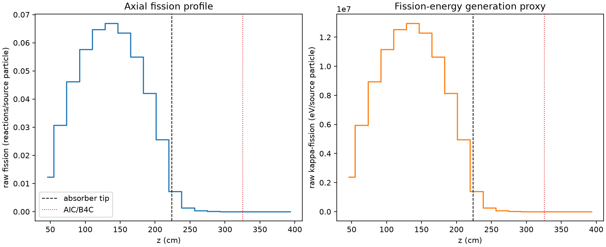
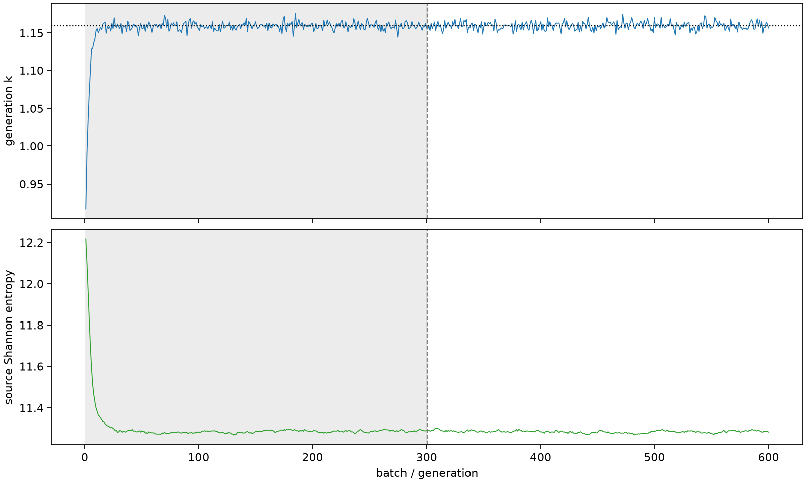

| field | value |
|---|---|
| experiment | V2-ADAPTIVE_01-0025 |
| k | 1.159725484709112 |
| MC standard error | 0.00019538316115007192 |
| seconds | 1070.9287410600227 |
| acceptance | not_assessed |
| convergence | review_required |
Completed is output integrity only; physical and statistical review required. Zero tallies do not prove zero production or zero uncertainty.
| diagnostic | value |
|---|---|
| geometric fuel voxels | 5280 |
| zero fission tally voxels | 604 |
| low signal fuel voxels | 1602 |
| low signal fission share | 5.509368043841275e-05 |
| low signal kappa share | 5.5122326626099104e-05 |
| important fission share | 0.9500716392045209 |
| previous filter included | 3678 |
| duration estimate s | 1562.5173488400023 |
| actual minus estimate s | -491.5886077799796 |
| fission relative MC error | statistics |
|---|---|
| all_geometric_fuel | {"voxels": 5280, "positive_mean_voxels": 4676, "zero_mean_voxels": 604, "undefined_relative_error_voxels": 604, "median": 0.010214703211962432, "p95": 0.8874555016201124, "maximum": 1.0000000000000002} |
| low_signal | {"voxels": 1602, "positive_mean_voxels": 998, "zero_mean_voxels": 604, "undefined_relative_error_voxels": 604, "median": 0.6144872040930225, "p95": 1.0, "maximum": 1.0000000000000002} |
| important_95pct | {"voxels": 2349, "positive_mean_voxels": 2349, "zero_mean_voxels": 0, "undefined_relative_error_voxels": 0, "median": 0.006560658575101494, "p95": 0.009365556910675555, "maximum": 0.011947540322610075} |
| outside_previous_filter | {"voxels": 1602, "positive_mean_voxels": 998, "zero_mean_voxels": 604, "undefined_relative_error_voxels": 604, "median": 0.6144872040930225, "p95": 1.0, "maximum": 1.0000000000000002} |
| kappa_fission relative MC error | statistics |
|---|---|
| all_geometric_fuel | {"voxels": 5280, "positive_mean_voxels": 4676, "zero_mean_voxels": 604, "undefined_relative_error_voxels": 604, "median": 0.010202385896006937, "p95": 0.8874271544895025, "maximum": 1.0000000000000002} |
| low_signal | {"voxels": 1602, "positive_mean_voxels": 998, "zero_mean_voxels": 604, "undefined_relative_error_voxels": 604, "median": 0.6137975710063894, "p95": 1.0, "maximum": 1.0000000000000002} |
| important_95pct | {"voxels": 2349, "positive_mean_voxels": 2349, "zero_mean_voxels": 0, "undefined_relative_error_voxels": 0, "median": 0.006552941692711073, "p95": 0.009354479089847748, "maximum": 0.011934575687381687} |
| outside_previous_filter | {"voxels": 1602, "positive_mean_voxels": 998, "zero_mean_voxels": 604, "undefined_relative_error_voxels": 604, "median": 0.6137975710063894, "p95": 1.0, "maximum": 1.0000000000000002} |
| axial bin | fission share | kappa-fission share |
|---|---|---|
| 1 | 0.025924907824893685 | 0.02592613195822696 |
| 2 | 0.06479279812139843 | 0.06479236198529689 |
| 3 | 0.09763154033515054 | 0.09763064892591608 |
| 4 | 0.12188125018420928 | 0.12188028739470144 |
| 5 | 0.13669030937829812 | 0.13668971131487534 |
| 6 | 0.14122331063026453 | 0.14122249735248843 |
| 7 | 0.13424681479656903 | 0.13424577685398642 |
| 8 | 0.1160370264063735 | 0.11603632092027157 |
| 9 | 0.0888980313255849 | 0.08889715845637682 |
| 10 | 0.05392773822194929 | 0.053927539288912696 |
| 11 | 0.015088704226249689 | 0.015092296378927533 |
| 12 | 0.0028377903014504464 | 0.0028390968462215773 |
| 13 | 0.0006293974021337472 | 0.0006296942157694013 |
| 14 | 0.00014524040812331394 | 0.00014531284129338818 |
| 15 | 3.322186349621663e-05 | 3.324101139017736e-05 |
| 16 | 9.102186799790973e-06 | 9.10592976081715e-06 |
| 17 | 2.162890902705085e-06 | 2.16487000694016e-06 |
| 18 | 6.366591897396399e-07 | 6.36637288777517e-07 |
| 19 | 1.6836963065099007e-08 | 1.6818288767787964e-08 |
| 20 | 0.0 | 0.0 |
Histories include the inactive-to-active transition at batch 300. kappa-fission approximates fission energy production, not total heat deposition.

